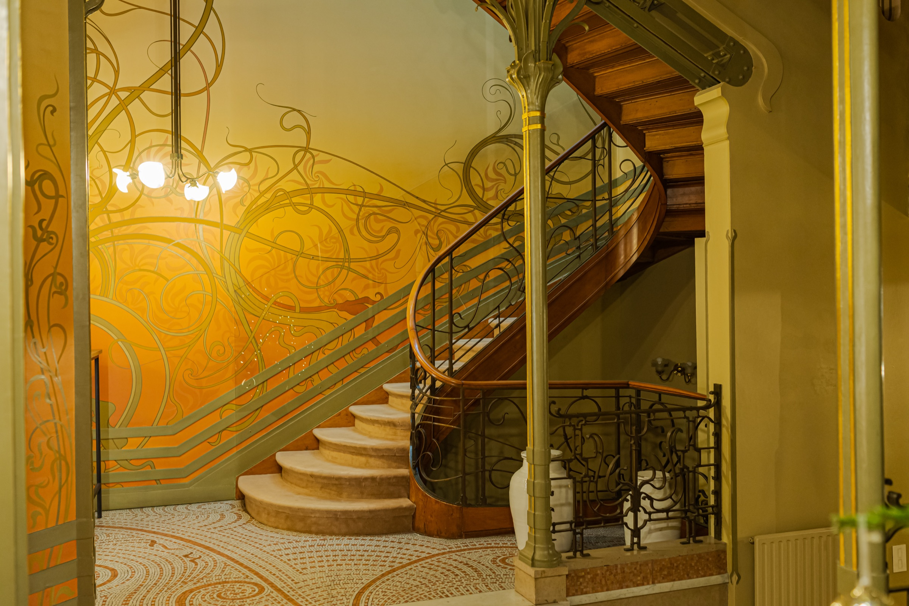
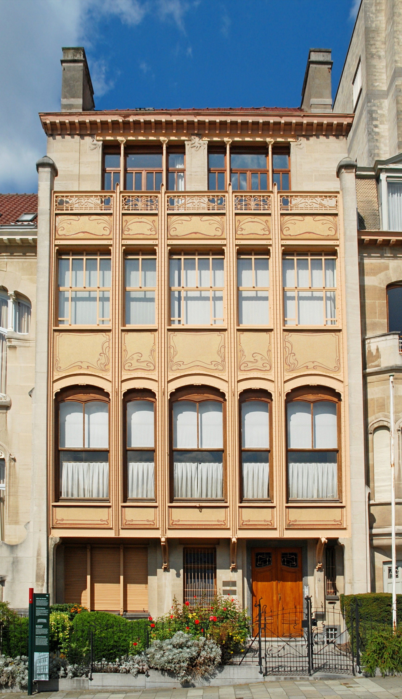
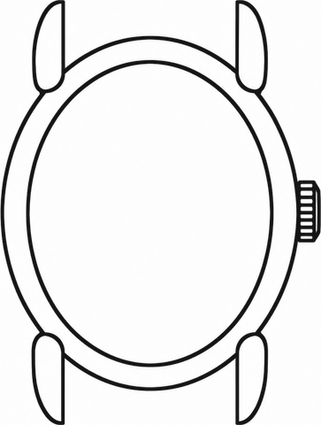
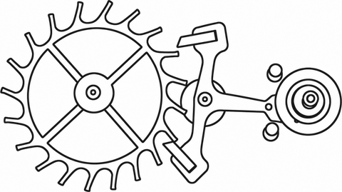
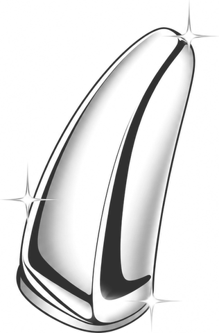

Kobus Watches — Brussels, Belgium
Every curve curated. Every detail intentional.
Elegance, by design.
Discover
Kobus is a new watch brand — born in Brussels. Our goal is to elevate everyday life through quiet elegance.
Our first model will be a dress watch, inspired by the city's architecture and heritage.

Our philosophy
Form first, then function.
At Kobus we design watches with beauty and elegance as their primary function. Every curve, every angle is designed with intent.
It’s for the person who catches the small things, the enticing details: proportion, balance, the way the light distorts the dial in a different way every time, a surprise detail that makes the watch pop — it’s all there because it belongs. The kind of design that's not a hype, but timeless. You keep noticing it. You keep finding your way back to it.
As a new entrant, the brand takes inspiration from what has come before, but never seeks to replicate it.
Details
So far.

Case
By using organic curves and a slender, oval case, the watch maintains elegant proportions.

Movement
Manually wound with small seconds, meant to be interacted with. No date, no rotor — nothing to distract from the design.

Finish
Stainless steel. Highly polished surfaces layered with sharp, brushed edges to underscore curves and maintain depth.

Brussels
The city is the blueprint.
The brand draws deeply from the cultural heritage of Brussels, building a unique visual identity.
These influences are translated into forms, colours, and details rarely seen in the watch industry, setting Kobus apart from more conventional design-led brands.
Our storyReleased when ready.
Be there when it lands! Sign up to get updates on development and the first release.